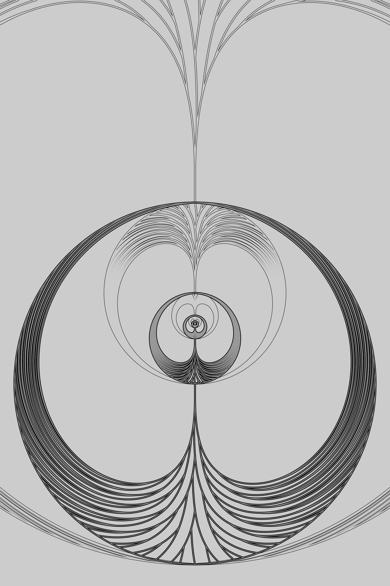

Figure 1. Concentrically arranged Fibonacci forking
patterns. The Fibonacci series is represented by the
number of nodes in each level of the forking pattern.
Within each level, the number of forking nodes is
approximately φ (≈1.618) times the number
of sterile nodes, and represent sequential terms of the
Fibonacci series. For example, five of the eight nodes at the
fifth level of the pattern are forking nodes and
three are sterile. Furthermore, the sequence of the
forking and sterile nodes, while never repeating, is
self-referential. If a forking node is represented
alphabetically as n and a sterile node as i
then the first five levels can be written as i,
n, ni, nin, and ninni. As such,
the representation of each level is an alphabetical
composite of the previous two terms, as each term of the
Fibonacci series is an arithmetical composite of the
previous two terms.